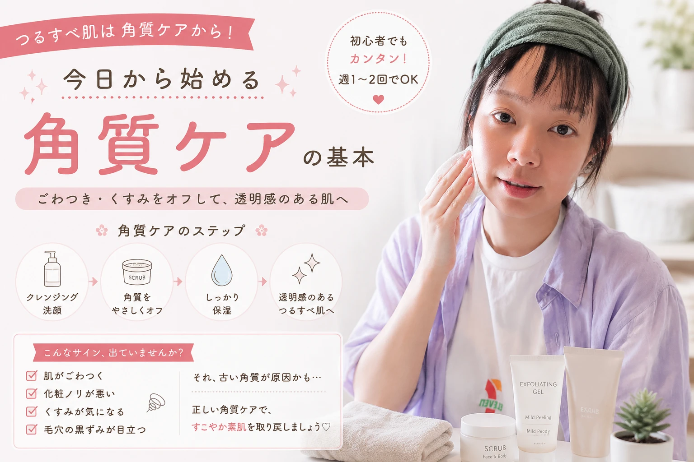
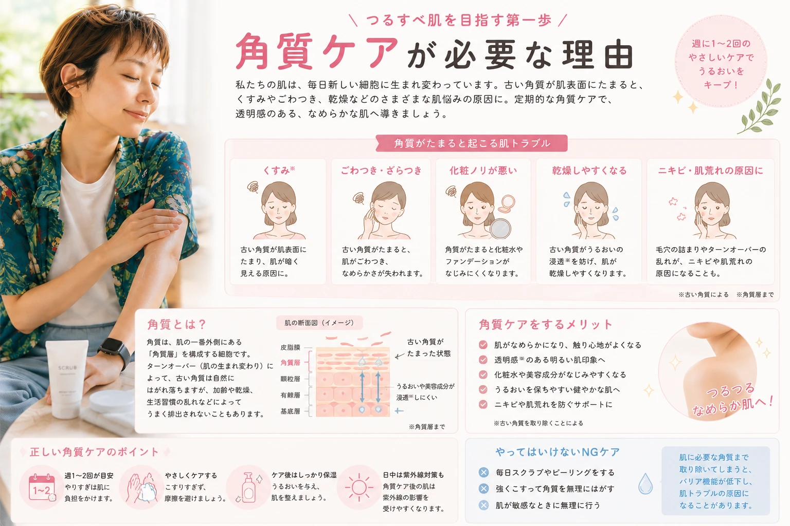
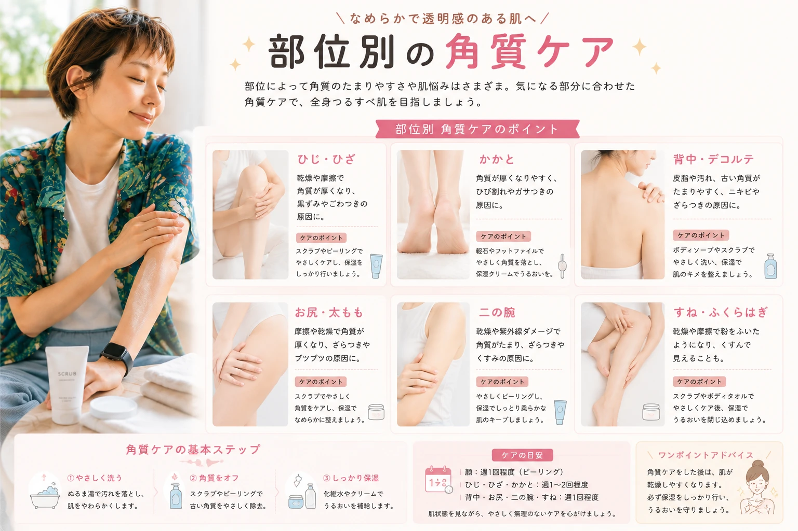

角質ケア完全ガイド
つるすべ肌を目指す正しいお手入れ方法
肌のゴワつきやくすみ、ひじ・ひざ・かかとのザラつきが気になる方は、角質ケアを取り入れてみましょう。 この記事では、初心者でも安心して始められる角質ケアの基本や、スクラブ・ピーリングの違い、適切な頻度、部位ごとのケア方法まで分かりやすく解説します。
この記事でわかること
- ✔ 角質ケアとは？
- ✔ スクラブとピーリングの違い
- ✔ 正しい角質ケアの方法
- ✔ おすすめの頻度
- ✔ 部位別のお手入れ方法
- ✔ やってはいけないNGケア
角質ケアとは？
角質ケアとは、肌表面に蓄積した古い角質をやさしく取り除き、なめらかな肌へ整えるスキンケアです。 健康な肌では約28日周期で新しい肌へ生まれ変わりますが、乾燥や紫外線、加齢、生活習慣の乱れなどによって古い角質が残りやすくなることがあります。 古い角質が蓄積すると、肌がゴワついたり、くすんで見えたり、保湿成分が浸透しにくく感じることがあります。
適切な頻度で角質ケアを行うことで、肌のキメが整い、保湿ケアの効果も実感しやすくなります。
角質ケアのメリット
- ✔ 肌のゴワつきを改善しやすい
- ✔ なめらかな肌触りを目指せる
- ✔ 保湿ケアがなじみやすくなる
- ✔ 肌のくすみ対策になる
- ✔ 清潔感のある印象につながる
角質ケアが必要な理由

ひじ・ひざ・かかとなどは、摩擦や圧力がかかりやすく、角質が厚くなりやすい部位です。 古い角質を放置すると、乾燥やザラつきだけでなく、見た目にも影響することがあります。
こんな症状はありませんか？
- 肌がザラザラする
- ひじやひざが黒ずんで見える
- かかとが硬くなる
- ボディクリームがなじみにくい
- 肌に透明感がないように感じる
このような場合は、肌に負担をかけない範囲で角質ケアを取り入れるのがおすすめです。
注意
角質ケアを毎日行うと、必要な角質まで取り除いてしまい、乾燥や肌荒れの原因になることがあります。 基本は週1〜2回を目安にしましょう。
スクラブとピーリングの違い
角質ケアには「スクラブ」と「ピーリング」の2種類があります。 どちらも古い角質を取り除く目的は同じですが、仕組みや特徴が異なります。
| 種類 | 特徴 | おすすめの人 |
|---|---|---|
| スクラブ | 粒子で古い角質をやさしく落とす | ザラつきが気になる人 |
| ピーリング | 成分の力で古い角質をやわらかくする | 肌への摩擦を減らしたい人 |
スクラブのメリット
- ザラつきを実感しやすい
- つるつるとした肌触りになりやすい
- ひじ・ひざ・かかとに使いやすい
ピーリングのメリット
- 摩擦が少ない
- 広い範囲にも使いやすい
- 乾燥しにくい商品も多い
初心者へのおすすめ
初めて角質ケアをする方は、刺激が少ないスクラブや保湿成分配合のピーリングジェルから始めると安心です。
正しい角質ケアの方法
角質ケアは「強くこする」のではなく、「やさしく古い角質を取り除く」ことがポイントです。肌への負担を減らしながら続けることで、なめらかな肌を目指せます。
STEP1 お風呂で肌を温める
入浴後は角質がやわらかくなり、お手入れしやすい状態です。5〜10分ほど湯船につかってから始めるのがおすすめです。
STEP2 スクラブ・ピーリングを使う
適量を手に取り、円を描くようにやさしくなじませます。強くこすると肌を傷つける原因になるため注意しましょう。
STEP3 ぬるま湯で洗い流す
熱いお湯は乾燥を招きやすいため、ぬるま湯でしっかり洗い流します。
STEP4 保湿する
角質ケア後の肌は乾燥しやすいため、ボディクリームやボディミルクで十分に保湿しましょう。
おすすめ頻度
| 肌質 | 頻度 |
|---|---|
| 普通肌 | 週1〜2回 |
| 乾燥肌 | 週1回程度 |
| 脂性肌 | 週2回程度 |
部位別の角質ケア

ひじ
ひじは摩擦が多く、黒ずみやすい部分です。週1回程度のスクラブと毎日の保湿を心がけましょう。
ひざ
ひざも角質が厚くなりやすいため、やさしくケアした後はしっかり保湿します。
かかと
かかとは最も角質が厚くなりやすい部位です。専用のフットスクラブや軽石を使用する場合も、強くこすりすぎないよう注意してください。
背中
皮脂が多く毛穴詰まりが気になる場合は、ボディ用ピーリングジェルなどを使うとケアしやすくなります。
二の腕
ザラつきが気になる場合は、保湿成分入りのスクラブを使用し、ケア後はしっかり保湿しましょう。
角質ケア後は保湿が重要
古い角質を取り除いた後の肌は、水分が蒸発しやすい状態です。そのまま放置すると乾燥しやすくなるため、角質ケア後は必ず保湿を行いましょう。
おすすめの保湿アイテム
- ✔ ボディクリーム
- ✔ ボディミルク
- ✔ ボディオイル
- ✔ セラミド配合ローション
特に乾燥しやすいひじ・ひざ・かかとは、重ね塗りをするとしっとり感が長続きします。
季節ごとの角質ケア
春・秋
肌がゆらぎやすい季節なので、刺激の少ないアイテムを選びましょう。
夏
汗や皮脂が増えるため、週2回程度の角質ケアで肌を清潔に保つのがおすすめです。
冬
乾燥しやすいため、角質ケアは週1回程度に抑え、保湿を重点的に行いましょう。
やってはいけないNG角質ケア
角質ケアは正しい方法で行えば肌をなめらかに整えられますが、間違ったケアは乾燥や肌荒れの原因になります。
NGポイント
- 毎日スクラブを使う
- 力を入れてゴシゴシこする
- 熱いお湯で洗い流す
- 角質ケア後に保湿しない
- 傷や炎症がある部分にも使用する
肌に赤みやヒリヒリ感がある場合は角質ケアを中止し、肌の状態が落ち着いてから再開しましょう。
よくある質問
Q. 角質ケアは毎日してもいいですか？
おすすめは週1〜2回です。毎日行うと必要な角質まで取り除いてしまい、乾燥や肌荒れにつながることがあります。
Q. スクラブとピーリングはどちらがおすすめ？
初心者の方は刺激の少ないスクラブや、保湿成分配合のピーリングジェルから始めると使いやすいでしょう。
Q. ケア後に肌が乾燥します。
角質ケア後は肌が乾燥しやすい状態です。ボディクリームやボディミルクで十分に保湿してください。
Q. ひじやかかとの黒ずみは改善しますか？
継続的な角質ケアと保湿によって、肌のキメを整えることが期待できます。ただし、変化には個人差があるため、無理のないペースで続けましょう。
まとめ
角質ケアは、古い角質をやさしく取り除き、なめらかな肌へ整えるための大切なボディケアです。 やりすぎは逆効果になることもあるため、週1〜2回を目安に、自分の肌状態に合わせて取り入れましょう。
今日から始める3つのポイント
- ✔ お風呂上がりにやさしく角質ケアをする
- ✔ 強くこすらず週1〜2回を目安にする
- ✔ ケア後は必ずボディクリームで保湿する
毎日の保湿と組み合わせることで、ひじ・ひざ・かかとなども、触れたくなるようななめらかな肌を目指せます。
おすすめの角質ケアアイテム
肌質に合ったアイテムを選ぶことで、無理なく角質ケアを続けられます。